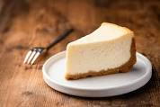

An Easy Cheesy Recipie
Document

A fresh cheese cake with mixed berries for added flavor
What you will need
- instant cheese cake mix (comes in box)
- graham cracker crums (comes in pre made with cheese cake mix)
- 2 tbsp. of sugar
- 5 tbsp. of margarine, or butter; melted
- *note* you can find the cheese cake mix and graham cracker crust in grocery stores in the instant cheese cake box.
- 1 1/2 cups of cold milk*. flavor of cheese cake can depend of the type of milk you use ie. whole, 2%, skim
Lets make a cheese cake
- First things first, your melted butter or margarine, goes into your graham cracker crum mix, mixed up and flattened into a pie plate
- Next your sugar can be sprinkled over the now flattened graham crust (personal prefrence) or mixed with the butter before putting it into the crust mix
- After you will need a bowl, and mix your milk with your instant cheese cake mix, until there is no lumps ior dry mix left
- Then you will poor your mix into the graham cracker crust thats into the pie pan
- And last set your cheese cake into the fridge for 30 min. or until the cheese cake mix is firmed up, then serve and enjoy
For extra fruity flavor, add fruits to your cheese cake mix, or put them on top for that extra kick.
Back to Top
Back to Main Page